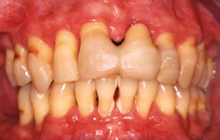
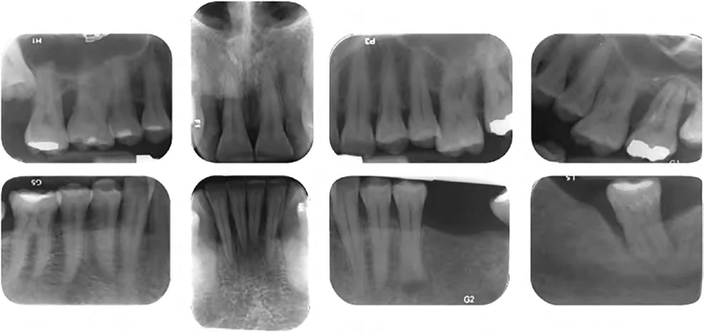

نسخه استخراجشده؛ ترجمه یا تأیید علمی انجام نشده است. وضعیت: captured
این رابطه دوسویه است و هر دو جهت آن شواهد محکمی دارد:

دیابت کنترلنشده خطر پریودنتیت را حدود سه برابر افزایش میدهد.
پریودنتیت بهعنوان ششمین عارضه دیابت شناخته میشود.
التهاب مزمن پریودنتال با آزاد کردن سایتوکاینها به جریان خون، مقاومت به انسولین را افزایش میدهد.
📌 خبر مهم: درمان مؤثر پریودنتال میتواند HbA1c را حدود ۰٫۳ تا ۰٫۴ درصد کاهش دهد — اثری قابل مقایسه با افزودن یک داروی خوراکی دیابت.
⚠️ نکته کلیدی: آنچه تعیینکننده است کنترل قند است نه صرف ابتلا به دیابت. بیمار دیابتی با کنترل خوب، پیشآگهی نزدیک به فرد سالم دارد.
در هایپرگلیسمی مزمن، قند بهطور غیرآنزیمی به پروتئینها میچسبد و AGEs (محصولات نهایی گلیکاسیون پیشرفته) تشکیل میشوند.

AGEها به گیرنده خود یعنی RAGE روی ماکروفاژها و سلولهای اندوتلیال متصل میشوند و نتیجهاش این است:
افزایش تولید TNF-α، IL-1 و IL-6 ⬅️ حالت هایپراینفلاماتوری
افزایش استرس اکسیداتیو
تغییر متابولیسم کلاژن: کلاژن ساختهشده کراسلینک بیشتری دارد، سفتتر و کمتر قابل بازسازی است.
اختلال در کموتاکسی و فاگوسیتوز نوتروفیل
اختلال در عملکرد فیبروبلاست و در نتیجه ترمیم کندتر زخم
میکروآنژیوپاتی و کاهش خونرسانی بافتی
📌 نتیجه نهایی: بیمار دیابتی کنترلنشده در برابر همان مقدار پلاک، پاسخ التهابی شدیدتر و تخریب بیشتری نشان میدهد.
هموگلوبین گلیکوزیله میانگین قند خون ۲ تا ۳ ماه گذشته را نشان میدهد و بهترین شاخص کنترل دیابت است.
| HbA1c | تفسیر | پیامد پریودنتال |
|---|---|---|
| زیر ۷ درصد | کنترل خوب | پیشآگهی نزدیک به فرد سالم |
| ۷ تا ۸ درصد | کنترل متوسط | افزایش ریسک |
| بالای ۸ درصد | کنترل ضعیف | ریسک بالا؛ احتیاط در جراحی |
پریودنتیت شدید و مقاوم به درمان میتواند نخستین نشانه دیابت تشخیصدادهنشده باشد. در بیمار با پریودنتیت شدید و بدون دلیل موجه، ارجاع برای بررسی قند خون کاملاً منطقی است.
⚠️ اشتباه رایج ۱:کنترل قند تعیینکننده است نه صرف تشخیص دیابت.
⚠️ اشتباه رایج ۲: رابطه دوطرفه است؛ درمان پریودنتال HbA1c را هم بهبود میدهد.
⚠️ اشتباه رایج ۳: AGE به گیرنده RAGE متصل میشود؛ این جفت را حفظ کن.